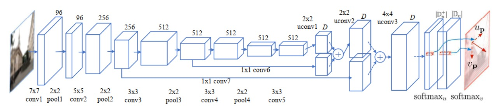
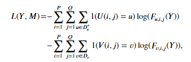

Umsetzung¶
Motion-Flow Schätzung und Netzwerk-Design
Das Ziel dieses FCN-Netzwerks besteht darin, eine End-to-End-Mapping von einem unscharfen Bild auf dessen entsprechende Motion Flow Map zu erreichen. Gegeben sei ein beliebiges RGB-Bild mit der willkürlichen Größe \(P\times Q\). Das FCN wird dazu verwendet eine Motion Flow-Map zu schätzen \(M=(U,V)\) mit der gleichen Größe wie das Eingabebild, wobei \(U(i,j)\in D_u^+\) and \(V(i,j)\in D_v\), \(\forall i,j\).
Text in Stichpunkten:
RGB-Bild mit der willkürlichen Größe \(P\times Q\)
Motion-Flow-Map \(M=(U,V)\) mit der gleichen Größe wie das Eingabebild wird geschätzt
Abbildung 4
Zur Bequemlichkeit, lassen wir \(D=|D_u^+| + |D_v|\) die Gesamtzahl der Labels bezeichnen sowohl für \(U\) als auch für \(V\). Die Netzwerkstruktur ist wie in Abbildung 4 gezeigt, verwendet werden 7 Faltungs-(conv) Layer und 4 Max-Pooling (Pool) Layer sowie 3 uconv-Layer zum Upsampling der Prediction-Map. Uconv bezeichnet die fraktionierte Faltung, auch bekannt als Deconvolution. Es wird ein kleiner Stride(Schritt) von 1 Pixel für alle Faltungsschichten verwendet. Die uconv-Layer werden mit bilinearer Interpolation initialisiert und werden zum Upsampling der Aktivierungsfunktionen verwendet.
7 Faltungs-(conv) Layer
4 Max-Pooling (Pool) Layer
3 uconv-Layer zum Upsampling der Prediction-Map
Skip-Verbindungen
\(P \times Q \times D\)-Tensor, Feature-Map des letzten uconv-Layers (conv7 + uconv2)
Stride(Schritt) von 1 Pixel für alle Faltungsschichten
uconv-Layer(Deconvolutional-Layer) mit bilinearer Interpolation initialisiert, Upsampling der Aktivierungen
Es werden auch Skip-Verbindungen hinzugefügt, die die Informationen aus verschiedenen Schichten kombinieren, wie in Abbildung 4 gezeigt. Die Feature-Map des letzten uconv-Layers (conv7 + uconv2) ist ein \(P \times Q \times D\)-Tensor mit den oberen \(|D_u^+|\)-Slices von Feature-Maps (\(P \times Q \times |D_u^+|\)) entsprechend der Schätzung von \(U\) und den verbleibenden \(|D_v|\)-Slices von Feature-Maps (\(P \times Q \times |D_v|\)) entsprechend der Schätzung von \(V\). Zwei separate Soft-Max-Layer werden jeweils auf diese beiden Teile angewendet, um die Posterior-Wahrscheinlichkeitsschätzung von beiden Kanälen zu erhalten. Sei \(F_{u,i,j}(Y)\) die Wahrscheinlichkeit, dass der Pixel bei \((i, j)\) eine Bewegung \(u\) entlang der horizontalen Richtung gemacht hat und \(F_{v,i,j}(Y)\) repräsentiert die Wahrscheinlichkeit, dass der Pixel bei \((i, j)\) eine Bewegung \(v\) entlang der vertikalen Richtung gemacht hat. Es wird dann die Summe des Kreuzentropieverlustes von beiden Kanälen als die Finale Loss-Function verwendet.
Posterior-Wahrscheinlichkeitsschätzung von beiden Kanälen
mit den oberen \(|D_u^+|\)-Slices von Feature-Maps (\(P \times Q \times |D_u^+|\)) entsprechend der Schätzung von \(U\) und den verbleibenden \(|D_v|\)-Slices von Feature-Maps (\(P \times Q \times |D_v|\)) entsprechend der Schätzung von \(V\).
Posterior-Wahrscheinlichkeitsschätzung von beiden Kanälen zu erhalten. Sei \(F_{u,i,j}(Y)\) die Wahrscheinlichkeit, dass der Pixel bei \((i, j)\) eine Bewegung \(u\) entlang der horizontalen Richtung gemacht hat und \(F_{v,i,j}(Y)\) repräsentiert die Wahrscheinlichkeit, dass der Pixel bei \((i, j)\) eine Bewegung \(v\) entlang der vertikalen Richtung gemacht hat.
Es wird dann die Summe des Kreuzentropieverlustes von beiden Kanälen als die Finale Loss-Function verwendet.

\(1\) ist eine Indikator Funktion